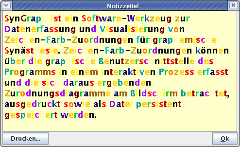
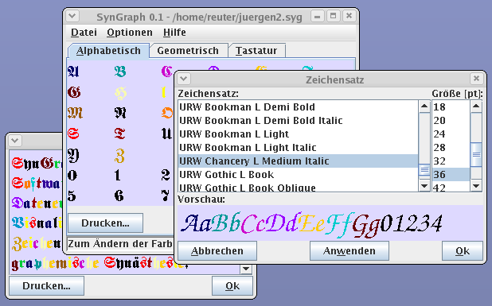

There is also an English
version of this page.
SynGraph
SynGraph ist ein Software-Werkzeug zur
Datenerfassung und Visualisierung von Objekt-Farb-Zuordnungen
für graphemische Synästhesie. Objekt-Farb-Zuordnungen können
über die graphische Benutzerschnittstelle des Programms in einem
interaktiven Prozess erfasst und die sich daraus ergebenden
Zurodnungsdiagramme am Bildschirm betrachtet, ausgedruckt sowie
als Datei persistent gespeichert werden.
Grundlegende Eigenschaften der Software
Die Software unterstützt in der aktuellen Version 0.2 die
folgenden grundlegenden Funktionen:
-
Datenerfassung
-
Die Erfassung der Objekt-Farb-Zuordnung erfolgt interaktiv am
Bildschirm an einem Diagramm mit Tastatur und Maus durch die
sukzessive Wahl einer Farbe für jedes Objekt des Diagramms.
Objekte werden durch Zeichenketten einschließlich einzelner
Buchstaben und Ziffern dargestellt. Die Speicherung der
erfassten Daten erfolgt in einer einfachen, XML-basierten
Beschreibungsdatei. Diese Datei wird zusammen mit etwaigen
weiteren Ressourcen nach dem .zip-Format komprimiert und
gebündelt gespeichert. Auf einem erfassten Datenbestand
mehrer Personen aufbauend wird es dadurch prinzipiell möglich,
weitergehende vergleichende Untersuchungen durchzuführen.
Eine automatisierte Weiterverarbeitung etwa durch externe
Zusatzprogramme könnte beispielsweise darin bestehen, eine
statistische Auswertung der Zeichen-Farb-Zuordnungen einer
größeren Anzahl von Probanden vorzunehmen, um Gemeinsamkeiten
und Unterschiede in den individuellen Zuordnungen aufzuspüren.
Ein typisches Ergebnis einer solchen Untersuchung könnte die
Erkenntnis sein, dass Menschen, die den Buchstaben A
rot sehen, dazu tendieren, den Buchstaben I gelb oder
weiß zu sehen.
-
Vergleichende Darstellung ausgewählter Ordnungskriterien
-
Das Programm bietet ferner den Benutzer die Möglichkeit,
verschiedene hypothetische Zuordnungsneigungen graphisch zu
verifizieren. Dazu platziert das Programm in Objektdiagrammen
auf verschiedenen Karteireitern die Objekte exemplarisch nach
verschiedenen Ähnlichkeitskriterien (vgl. Abb. 1),
beispielsweise nach der Ähnlichkeit der geometrischen Form von
Großbuchstaben und Ziffern, wobei sich das Ähnlichkeitsmaß in
diesem Beispiel an einer klassischen, serifenlosen Schrift
orientiert. Weitere Ordnungskriterien wie phonetische
Ähnlichkeit, Ähnlichkeit in der bei Aussprache aktivierten
Muskelpartien (anatomische Ähnlichkeit), Sortierung nach der
Reihenfolge des Erlernens oder Sortierung nach der
Häufigkeitsverteilung sind denkbar. Durch vergleichendes
Anschauen dieser Zeichendiagramme kann der Benutzer mit
wenigen Blicken den Grad seiner persönlichen Neigung zu einem
der unterstützten Ordnungskriterien erfahren und bewerten.
Ferner kann der Proband durch Vergleich der verschieden
geordneten Ansichten erfahren, inwieweit die bloße Veränderung
der Anordnung der Zeichen den Farbeindruck beeinflusst.

|

|
|
Abb. 1: Zeichendiagramme mit verschiedenen
Ordnungskriterien
|
-
Persönlicher farbiger Notizzettel
-
Der persönliche farbige Notizzettel dient zur Anzeige
beliebiger Texte, die der Objekt-Farb-Zuordnung entsprechend
eingefärbt werden. Der Text kann manuell eingegeben oder auch
per Ausschneiden-&-Einfügen in den Notizzettel kopiert
werden. Dadurch kann die individuelle Ausprägung der
graphemischen Synästhesie des Benutzers auf eindrucksvolle
Weise veranschaulicht wie auch zu Prüfungszwecken der
erfassten Zeichen-Farb-Zuordnung durch den Benutzer verwendet
werden.
|

|
|
Abb. 2: Farbiger Notizzettel
|
- Sonstige Eigenschaften
-
Die Software erlaubt ferner die Auswahl des angezeigten
Zeichensatzes (Schriftart und -größe) sowie der
Zeichenhintergrundfarbe (vgl. Abb. 3). Änderungen der
Einstellungen in einem Fenster wirken sich dabei nach
Bestätigung unmittelbar auf alle gleichzeitig geöffneten
Fenster aus.
|

|
|
Abb. 3: Sonstige Eigenschaften
|
Derzeitige Einschränkungen
Derzeit unterstützt die Software nur einige wenige Ausprägungen
graphemischer Synästhesie, die über reine
Zeichen-Farb-Zuordnungen hinaus gehen. Zuordnungen von
Zeichenketten auf Farben werden teilweise unterstützt. Zu den
nicht unterstützten Eigenschaften zählen insbesondere
mehrfarbige oder gemusterte Objekte, die Berücksichtigung des
kontextuellen Farbeinflusses benachbarter farbiger Objekte
(z.B. farbige Buchstaben innerhalb eines Wortes), sowie farbige
Objekte jenseits von Zeichen und Zeichenketten. Die
unterstützte Auswahl an Farben folgt momentan einem auf dem
Standard-RGB-Modell basierenden Farbmodell; transparente Farben
werden daher derzeit ebensowenig berücksichtigt wie metallisch
glänzende Farben.
Weitergehende Beschreibung
Eine weitergehende Beschreibung des Programms ist zur Zeit
leider nicht verfügbar. Die meisten der in diese Software
eingebauten Funktionen sollten selbsterklärend sein. Falls
jemand eine ausführlichere, geeignete Benutzeranleitung
schreibt, werde ich sie gern an dieser Stelle einfügen.
Verfügbarkeit
SynGraph wurde vollständig in Java entwickelt und wird unter der
GNU Public License („GPL”) in der Version 2
lizensiert. Die binäre Fassung steht als JAR-Archiv zur
Verfügung und sollte problemlos auf allen Plattformen laufen,
auf denen Java in der Version 5 oder einer neueren Version
installiert ist. Weitergehende Informationen über Java sind im
Internet unter http://java.sun.com zu finden. Die
jeweils aktuellste Version von SynGraph kann sowohl als
Quelltext wie auch in binärer Form aus Internet unter der
Adresse http://www.soundpaint.org/syngraph/syngraph.php
heruntergeladen werden.
Weiterführende Literatur
Es seien noch einige weiterführende Referenzen zum Thema
Synästhesie genannt:
http://www.synaesthesie.net/ |
Forum für Synästhetiker und Synästhesieinteressierte |
http://www.synaesthesieforum.de/ |
Moderierte Mailingliste für Synästhetiker und
Synästhesieinteressierte |
http://www.synaesthesie.ch/ |
Schweizer Forum mit Synästhesie-Test |
http://www.sensequence.de/ |
sensequence — eine Sammlung überwiegend bildlicher
Beschreibungen individueller synästhetischer Empfindungen
|